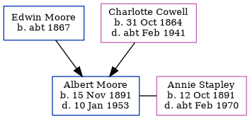

Albert Edwin George Moore 1891 - 1953
[ Home ] | [ Calendar ] | [ Surnames Index ] | [ Errors ] | [ Family History ]A compositor and sergeant royal engineer and the youngest of 3 children of Edwin Moore (a carpenter) and Charlotte Cowell (a domestic servant), Albert Moore, the second cousin twice-removed on the mother's side of Nigel Horne, was born in Bexleyheath, Kent, England on 15 Nov 18911,2,3,4,5,6,7,8 and baptised there at Christ Church on 3 Jan 1892. He married Annie Stapley at St Stephen's Church, 37 Waterloo Road, Tonbridge, Kent, England on 5 May 191510.
During his life, he was living at Priory Walk in Tonbridge on 31 Mar 19012, at 5 Alexandra Road in Tonbridge on 17 Nov 19085 and on 2 Apr 191111, and at 18A Avebury Avenue in Tonbridge on 29 Sept 19394 and in 1953. On 17 Nov 1908 he was serving in the army (soldier Number: 340032, Rank: Acting Company Quarter Master Sergeant, Corps: Royal Engineers).
He died on 10 Jan 1953 at Victoria Cottage Hospital in Tonbridge7,9.
Parents
- Edwin was born c. 1867
- Charlotte Priscilla Ann was born on 31 Oct 1864
Citations
- 1901 England Census Online publication - Provo, UT, USA: The Generations Network, Inc., 2005.Original data - Census Returns of England and Wales, 1901. Kew, Surrey, England: The National Archives of the UK (TNA): Public Record Office (PRO), 1901. Data imaged from the National
- 1901 England, Wales & Scotland Census - Findmypast (was age 9 and the son of the head of the household)
- 1911 England Census Online publication - Provo, UT, USA: Ancestry.com Operations, Inc., 2011.Original data - Census Returns of England and Wales, 1911. Kew, Surrey, England: The National Archives of the UK (TNA), 1911. Data imaged from the National Archives, London, England.
- 1939 Register - Findmypast (was the head of the household)
- British Army WWI Service Records, 1914-1920 Online publication - Provo, UT, USA: Ancestry.com Operations Inc, 2008.Original data - War Office: Soldiers' Documents, First World War 'Burnt Documents' (Microfilm Copies); (The National Archives Microfilm Publication WO363); Records created or inherited (Relation to Head of House: Self)
- England & Wales births 1837-2006 - Findmypast
- England & Wales deaths 1837-2007 - Findmypast
- England & Wales, FreeBMD Birth Index, 1837-1915 Online publication - Provo, UT, USA: The Generations Network, Inc., 2006.Original data - General Register Office. England and Wales Civil Registration Indexes. London, England: General Register Office. © Crown copyright. Published by permission of the Cont
- England & Wales Government Probate Death Index 1858-2019 - Findmypast
- England & Wales Marriages 1837-2005 - Findmypast
- 1911 Census for England & Wales - Findmypast (was age 19 and the son of the head of the household)
Media
1901 England, Wales & Scotland Census - GBC/1901/0006182212
England & Wales deaths 1837-2007 - BMD/D/1953/1/AZ/000906/100
England & Wales marriages 1837-2005 - BMD/M/1915/1/AZ/000610/042
England & Wales births 1837-2006 - BMD/B/1891/4/AZ/000388/141
1939 Register - TNA/R39/1796/1796B/003/39
Kent marriages and banns - PRS/KENT/MAR/0190538/1
England & Wales Government Probate Death Index 1858-2019 - GBOR/GOVPROBATE/C/1953-1953/00139828
British Army Service Records - GBM/WO363-4/7391808/22/541
Britain, Campaign, Gallantry & Long Service Medals & Awards - GBM/MCI/3101543
Family Tree
Map
Generated by ged2site. Last updated on Jul 3, 2024
Known Issues
Residence record for 1953 contains no citation
Listed in the residence for 1953, but spouse Annie Stapley is not
Location for "military service" on 17 Nov 1908 is empty